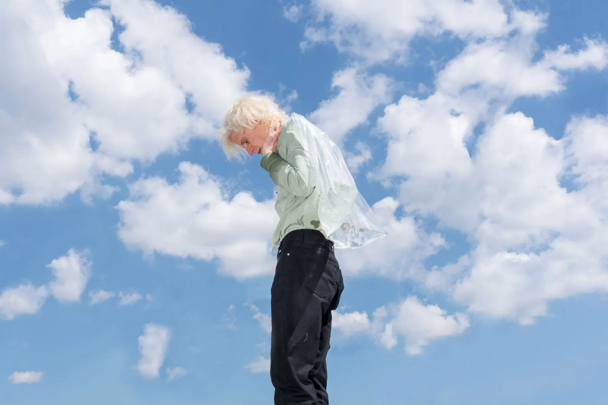
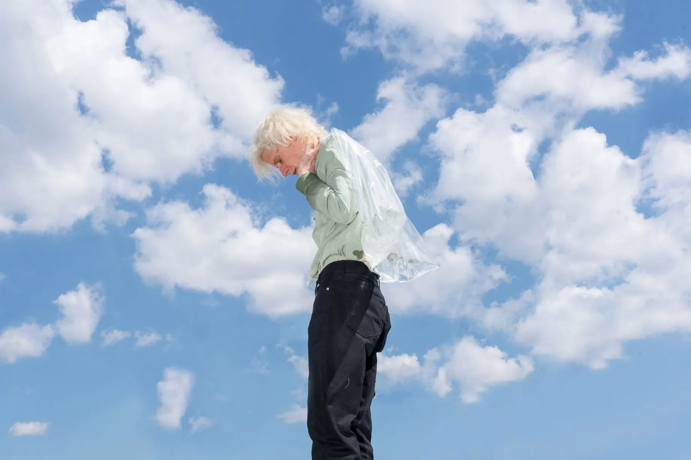
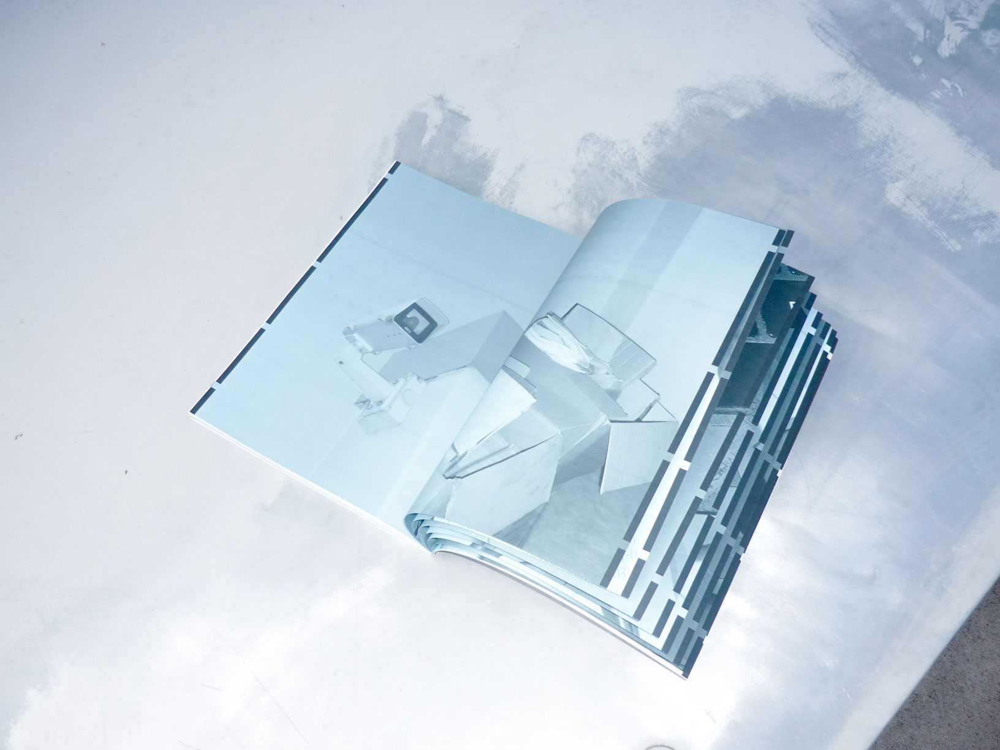
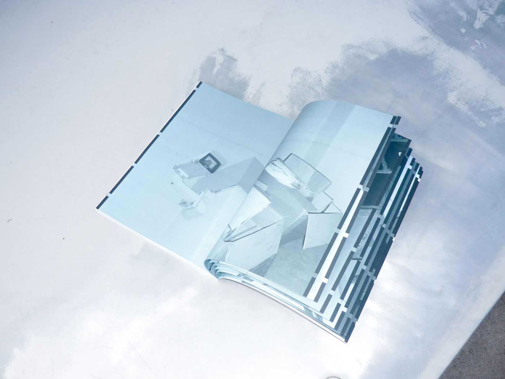

GINEVRA
BERNASCONI
Graphic and visual designer based in Milan. Coming from an art based education, I’m now currently completing a master degree in Communication Design at Politecnico di Milano. Working as a freelancer today, I have collaborated with Valentina Cameranesi Sgroi and Giga Design Studio.
g.ginevrabernasconi@gmail.com
@ginevrabernasconi
2022/23
I.C.E. Insurge Commit Extinguish
speculative, editorial design
2023
Panorama L'Aquila
visual identity
2023
Spaziale 2023
motion design
2023
Memetic Warfare Vol.1, The Gaza Conflict
editorial design
2023
Anthropology of Intelligences
editorial design
2023/24
LOEWE FOUNDATION Craft Prize 2024
art direction
2024
Inatto Magazine Issue n.1, The Right to Copy
art direction, editorial design
2024
Non Places
editorial design
2024
OfficinaOtto
web design


I.C.E.
Insurge Commit Extinguish
“I.C.E. Insurge Commit Extinguish” is the narration of the thesis project carried out during the Final Synthesis Studio 2023/24 course. The project, speculative design themed, was created with the purpose of showing climate change from the perspective of a natural element. Within a scenario in which ice is tired of human abuse and sees its very existence threatened, it chooses to rebel. The ice terrorist association, I.C.E., acts against humanity to exterminate it and restore the long-lost balance on earth.
I.C.E.’s bombs are everywhere and each is set to explode within minutes. Any attempt to get close accelerates the timer’s scrolling, bringing the bomb dangerously close to exploding. The only chance to stop the device is to touch its gelid surface. As soon as the contact ends, however, the time starts running again until it runs out. Getting stuck there is the only solution: wasting time to earn more time.
Team Ginevra Bernasconi, Giulia Bonalumi, Jacopo Domenichini, Agostino Sanna, Andrea Vitali


Panorama l'Aquila
ITALICS brings to L'Aquila the third edition of Panorama, the traveling diffuse exhibition that since 2021 connects art, architecture, antiquity and the contemporary with the territory and its communities.This year the exhibition needed a new look.
The visual identity project for Panorama is based on a typographic logo that features the name of the event, or its initial, between two inverted brackets: a graphic synthesis to represent the opening of the panorama before the eyes of the explorer, like two eyelids that, by opening, allow one to see. The emphasis is not on the landscape itself but on the experience of immersion in the landscape itself.
The logo reconfigures, shrinks and expands like a living element, creating patterns and interacting with images. Clean typography, large single-color backgrounds, and serif typeface (Practice by Optimo) ensure that the identity has a simple, light tone that is also refined and elegant.
Work for Giga Design Studio X Italics
Team Giacomo Scandolara, Gabriele Donini, Pablo Galbusera, Alessandro De Vecchi, Arianna Primavera
Link //italics.art/panorama/panorama-laquila/
Instagram @italics.art

 


Spaziale 2023
Everyone belongs to everyone else
For the visual identity project created for the Italian pavilion of the Architecture Biennale 2023, I was in charge of the animations, both for social and for the website, as well as the creation of content also in a static version.
The animations, to remain consistent with respect to the coordinated image, are based on the same starting matrix: the map of Italy, visually summarized through boxes filled with the gradient. These gradients zoom in and out by pushing each other, interacting with other figures, photographs, numbers, and text. The animations I made were used for the reels, for the project maps on the site, and for the case study of the project within the Giga Design Studio site.
Work for Giga Design Studio X Biennale di Venezia
Team Giacomo Scandolara, Gabriele Donini, Pablo Galbusera, Alessandro De Vecchi, Arianna Primavera, Daniele Polacco
Link https://www.spaziale2023.it/
Instagram @spaziale2023


Memetic Warfare
Vol.1 - The Gaza Conflict
In an age dominated by digital communication, memes have taken a central role in our daily interaction. They are not limited to being a hilarious pastime, but have become a veritable form of language.
Born within the freedom of the web, memes have mutated into influential marketing and political propaganda tools, often in controversial ways.
Memetic Warfare Vol.1 sets out to memetically represent the diverse and complex facets of the Israeli-Palestinian conflict without giving answers but, on the contrary, stimulating the emergence of new insights and debate: How do memes describe this conflict to us? What opinion do we have about it now? Who is the good guy, who is the bad guy?
Team Ginevra Bernasconi, Federico Gajo, Nicola Maria Patitucci, Francesco Scarfone, Carlotta Sereni


Anthropology of Intelligences
On risk and opportuinities of AI for the study of cultures
“Anthropology of Intelligences: On Risk and Opportunities of AI in the Study of Culture” is a book presenting the class material from the “AI and Anthropology” course of the Master in Artificial Intelligence.
Across six chapters, the book outlines the various ways in which AI can influence anthropology, providing a comprehensive overview of its potentials and risks. It explains how AI can be a valuable tool for anthropologists, supporting the collection of ethnographic data, enabling the analysis of large amounts of information, and opening up new research perspectives. At the same time, it highlights the limitations of AI in this field, shedding light on the challenges related to interpreting complex cultural contexts, understanding social dynamics, and human empathy. Above all, the lessons summarized in the book explore the biases in AI, explaining how these reflect and influence our representation of the world and its facets.
The project is purely speculative. In fact, the course does not exist. Both the trailer video and all the textual content of the book were entirely written by artificial intelligence itself. Within it, the promptography contain all the questions we asked to Chat GPT in order to product the content of the book.
Team Ginevra Bernasconi, Federico Gajo, Nicola Maria Patitucci, Francesco Scarfone, Carlotta Sereni

LOEWE FOUNDATION Craft Prize 2024
The LOEWE FOUNDATION Craft Prize seeks to acknowledge and support international artisans of any age or gender who demonstrate an exceptional ability to create objects of superior aesthetic value. As an assistant to the art director Valentina Cameranesi Sgroi I had the chance to contribute to the realization and accomplishment of the 2024 editions of the Craft Prize, which was held in Paris, at the Palais de Tokyo. Specifically, I assisted my mentor during the visual research for the concept she developed, as well as the curation of the visual content coming from the artists, the selection of material for the digital exhibition, the creation of before the show video and image material, the retouch and crop guides of all image and video material and other aspects along the way.
Work for Valentina Cameranesi Sgroi X LOEWE Foundation
Link https://craftprizeexhibition.loewe.com/ and //craftprize.loewe.com/en/craftprize2025
Instagram @LOEWEFOUNDATION


 



Inatto Magazine
Issue n.1 - The right to copy
Rights are not only those recognised by law. There are behaviours we all enact, that are shared even if considered unethical, and that is what legitimises them. Manipulating, destroying, failing, forgetting, copying.
All of these are wrong, or is it our perception that they are?
INATTO is a magazine written by creatives for creatives with the aim of opening a discussion on the needs of those who belong to the field. The magazine header works as a constitution while each issue of it is a new right, which is legitimised through the words of the people who have participated in its creation.
The magazine presents itself as a place for dialogue between different points of view, with the aim of questioning those taboos that prevent the creative system from evolving.
The right to copy is the first issue.
Link https://inattomag.it/index.html
Instagram @inatto.mag


Nonplaces
“Non Places” is a visual unicum of different graphic languages experimented on the theme of nonplaces developed by the anthropologist Marc Augé.
There is a dialectic, an osmosis between places and nonplaces not well understood by those who stop at a superficial approach. The main requirement of a nonplace is not attributable to a generic list of designed places like train stations, airports, supermarkets, malls, but it depends on people’s collective perception of that particular spatial context.
If places and nonplaces are not born with a specific nature, if they cannot be catalogued but on the contrary they are mutable and contiguous, then it is only the people who experience them who perceive them as places or nonplaces. So how can we turn a nonplace into a place?

OfficinaOtto
Officina otto is a post production house and capture service studio. They came to us with a specific need: an online portfolio that could easily display all their works and clients, but that could only be visible to those with the link of it, due to copyright reasons. We created a website with two different kind of user experience, one grid and one list. The grid version shows a selection of their most significant works, while the list version consists of a list of brands with which they had collaborated and the respective works done for them.
The portfolio shown here is a free of copyright images version of the original one. All original ones are copyrighted.
Team Ginevra Bernasconi, Agostino Sanna